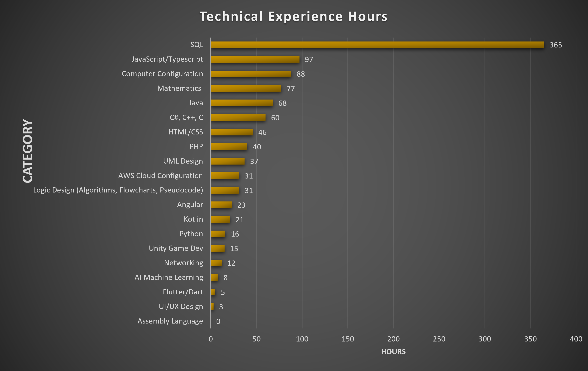

Download
Professional Summary
I am a research associate intern at the Medical University of South Carolina. Over the past two years, I have obtained over 662 hours of technical hands-on experience in the field of IT. While my skills are diverse, I specialize in creating clean and beautiful user interfaces that run on secure and efficient back-ends. My most notable project is a picture framing application I developed that has been in daily production use for over 3 years.
Technical Skills
Certifications
NVIDIA - Certificate of Competency, Fundamentals of Deep Learning (October 18, 2024)
AWS - Amazon Web Services Cloud Practitioner (July 2025 - July 2028)
Education
Bachelor of Science, Software Development - ECPI University, Virginia Beach VA
Associate of Science, Business Administration - Trident Technical College, Charleston SC
Relevant Work History
MUSC - Research Associate Intern, Charleston SC
(March 2025- Current)
I am a research associate intern at the Medical University of South Carolina. Over the past two years, I have obtained over 662 hours of technical hands-on experience in the field of IT. While my skills are diverse, I specialize in creating clean and beautiful user interfaces that run on secure and efficient back-ends. My most notable project is a picture framing application I developed that has been in daily production use for over 3 years.
Technical Skills
- Programming Languages: Java, JavaScript, C#, C++, C, Kotlin, Python, Dart
- Web Development: HTML/CSS/PHP, Angular, React
- Database Management: T-SQL, MySQL, Microsoft Access
- Cloud Computing: AWS Cloud
- Computer Configuration: Hardware and Software, OS(Mac, Linux, Windows), Networking
- Mathematical/Analytical Skills: AI/Machine Learning, Linear Algebra and Statistics
- Design & Logic: Logic Design (Algorithms, Flowcharts, Pseudocode), UML Design, UI/UX Design for Mobile and Web Applications

Certifications
NVIDIA - Certificate of Competency, Fundamentals of Deep Learning (October 18, 2024)
AWS - Amazon Web Services Cloud Practitioner (July 2025 - July 2028)
Education
Bachelor of Science, Software Development - ECPI University, Virginia Beach VA
- Notable Achievements:
- ✨ 4.0 Cumulative GPA
- ✨ Dean's List - 2024, 2025, 2026
- ✨ Student of the Week - December 2024
Associate of Science, Business Administration - Trident Technical College, Charleston SC
Relevant Work History
MUSC - Research Associate Intern, Charleston SC
(March 2025- Current)
- Notable Projects:
- ✨ Coded a Docx/PDF API module to output user-friendly patient medical summaries.
- ✨ Writing Python scripts to automate database management.
- Technologies Used:
- JavaScript, Python
- Doc.JS, Node.JS, Express.js, Microsoft Access Database, GitHub
- Daily Requirements:
- Communicate with colleagues in weekly technical meetings on current project status, bug fixes, and help needed.
- Consult documentation and conduct research to solve problems and drive solutions.
- Conduct bug fixes for known errors in code.
- Read and review code and make changes as necessary.